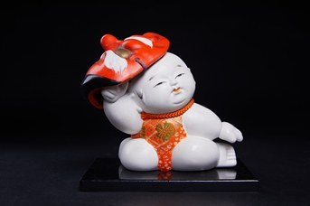

Gosho Ningyō (Búp bê Hoàng cung) là dòng búp bê truyền thống gắn liền với hoàng cung (Gosho) ở cố đô Kyoto, phát triển rực rỡ trong thời kỳ Edo. Xưa kia, loại búp bê này được hoàng cung dùng làm quà tặng cho các lãnh chúa, mang ý nghĩa cầu phúc và trừ tà. Gosho Ningyō nổi bật với thân hình trẻ nhỏ mập mạp, đầu to và làn da trắng ngần được tạo nên từ nhiều lớp gofun – bột vỏ sò nghiền mịn – được quét chồng lên nhau rồi mài bóng.
Menmochi (Cầm mặt nạ) là hiện vật nhỏ nhất trong toàn bộ bộ sưu tập. Tác phẩm thể hiện một chú bé ngồi nghiêng người thư thái, một tay nâng chiếc mặt nạ màu đỏ lên trên đầu như đang nô đùa, gương mặt tròn trịa với nét biểu cảm tinh nghịch. Chiếc yếm đỏ thêu hoa văn vàng nổi bật trên làn da trắng mịn, tạo nên vẻ đáng yêu và sinh động dù kích thước rất nhỏ.
Mô-típ trẻ con nghịch mặt nạ rất phổ biến trong dòng Gosho Ningyō. Hình ảnh này vừa thể hiện sự hồn nhiên, vô tư của tuổi thơ, vừa gợi tới những chiếc mặt nạ nghi lễ xuất hiện trong các lễ hội truyền thống Nhật Bản. Tác phẩm gửi gắm lời chúc trẻ em luôn vui vẻ, khỏe mạnh và bình an, đồng thời cho thấy tài năng của nghệ nhân trong việc thể hiện vẻ đẹp tinh tế ngay cả trên một hiện vật nhỏ bé.
御所人形は、古都・京都の御所（宮中）とゆかりの深い伝統人形で、江戸時代に大きく花開きました。かつては宮中から大名への贈り物として用いられ、福を招き、魔を祓うという意味が込められていました。ふっくらとした幼子の体つき、大きな頭、そして貝殻を細かく砕いた「胡粉」を何層にも塗り重ねて磨き上げた真っ白な肌が特徴です。
「面持ち」はコレクション全体で最も小さな作品です。体を傾けてくつろいだ姿で座り、遊んでいるかのように片手で赤いお面を頭の上に掲げる男の子を表しており、丸い顔にはいたずらっぽい表情が浮かんでいます。金の文様を刺繍した赤い腹掛けが滑らかな白い肌に映え、とても小さな作品ながら愛らしく生き生きとした印象を与えます。
お面で遊ぶ子どもというモチーフは、御所人形でとてもよく見られるものです。この姿は子ども時代の無邪気さや屈託のなさを表すとともに、日本の伝統的な祭礼に登場する儀式のお面も思い起こさせます。本作には、子どもがいつも楽しく、健やかに、無事に過ごせるようにとの願いが込められており、小さな作品の中にも繊細な美しさを表現する職人の技が示されています。